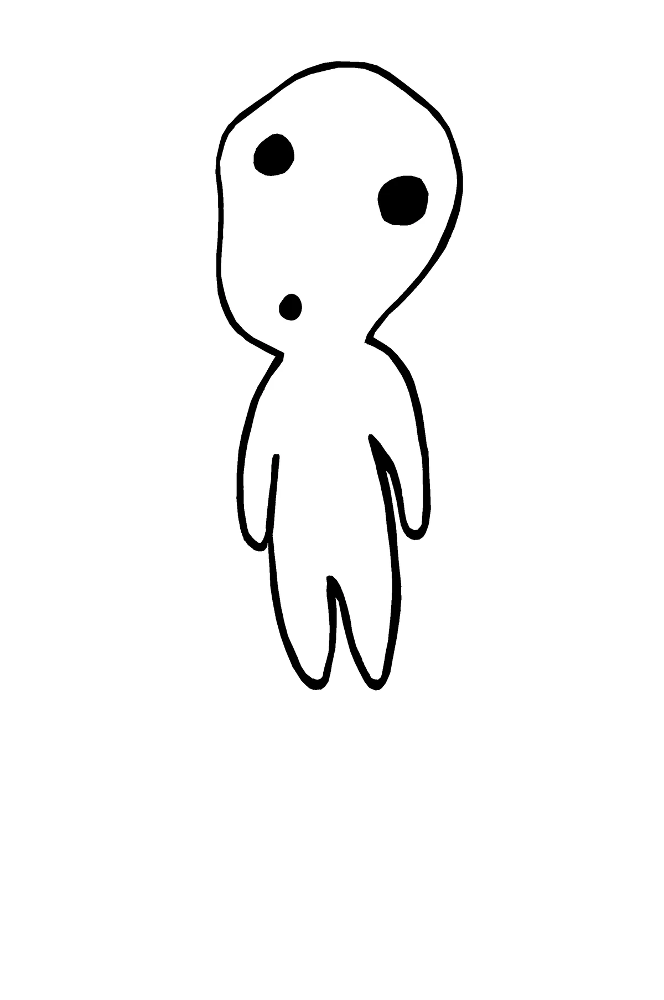

Princesse Mononoké
Ashitaka, prince d’un village reculé, est maudit par un sanglier démoniaque après l’avoir vaincu pour protéger les siens. Cette malédiction lui donne une force surhumaine, mais le condamne à une mort certaine. Il part alors vers l’ouest pour trouver un remède et comprendre l’origine de cette corruption.
Il découvre un monde en guerre : d’un côté, la forêt sacrée, habitée par des esprits anciens et protégée par des animaux divins (loups, sangliers, cerf-esprit...), et de l’autre, la Forge de Fer, dirigée par Dame Eboshi, une femme puissante et visionnaire qui veut construire une société humaine libre, mais qui détruit la nature pour cela.
Au cœur de cette lutte, il rencontre San, une jeune fille humaine élevée par des loups, qui hait les humains et défend la forêt avec rage. Elle est appelée "Princesse Mononoké" ("Mononoké" = esprit vengeur).
Ashitaka tente de jouer les médiateurs entre ces deux mondes en guerre – les humains qui veulent survivre et progresser, et les créatures de la nature qui veulent préserver leur monde sacré.
×
Bravo ! Tu as trouvé tous les esprits ! 🌿
